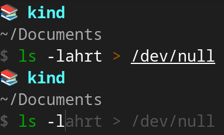
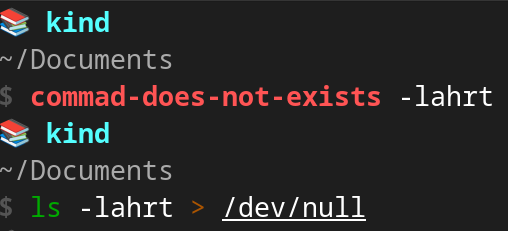
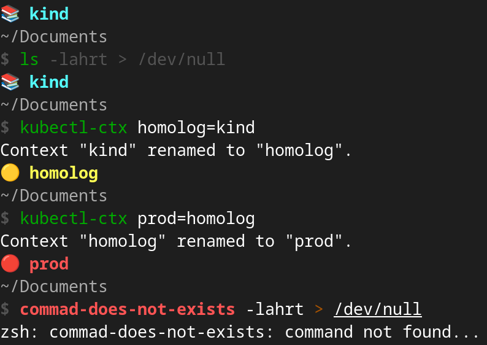

AI TL;DR
Too lazy to read? Summarize this post with:
AI TL;DR
Too lazy to read? Summarize this post with:
Blog Post Publish Date: 2024/02/08
ZSH + Starship: A Productivity Masterpiece#
This blog post covers my prompt customization experience, favorite ZSH Plugins, ZSH options, and Starship configuration. Finally, I introduce a simple guide to configure my custom theme from scratch.
My Prompts Customization Experiences#
Productivity is a topic that I definitely like. For long time, I used the raw Terminal over Bash, It is force me to memorize the commands, but the productivity is not so good. I felt that I need to improve my Terminal setup to focus in productivity.
xonsh: Python + Bash Advantages (and Disadvantages)#
Due to my expertise in Python, I have been testing xonsh for approximately six months. The xonsh is a superset of Python that includes additional shell primitives familiar to Bash users. The combination of Bash and Python enhances productivity by blending the simplicity of Python syntax with the versatility of Bash. However, debugging can be challenging (imagine a list comprehension in Python syntax combined with dictionaries and environment variables in Bash syntax).
zsh: Extensible and Product Ready (If Customized)#
I needed come back the real world again, then I gave a chance for ZSH, a advanced and highly customizable command-line interface with enhanced productivity features and a large Plugins. It greatly appealed to me, mainly when I tested the Spaceship a “minimalistic, powerful and extremely customizable ZSH prompt”, and the oh-my-zsh framework that provides a simple way to manage Plugins and Themes. I believed I had reached a stable terminal configuration with a good balance between productivity and simplicity, but in the MacOs workstation, the input and startup delay of the commands got on my nerves.
I searched improvements tips in the Blog Posts and Youtube videos, but the result don’t satisfied myself. Then, I opted to install the Plugins manually avoiding the oh-my-zsh, and I tested the Starship (in my words: “a Spaceship alternative, in Rust, blazing-fast, with many stars in the GitHub”).
The results were astonishing. I didn’t have to put in any effort to transition my theme configuration from Spaceship to Starship, and the performance is exactly as I expected.
fish: Ready to Use (But non-POSIX Compliant)#
In the past few days, I tried out Fish, described as “a smart and user-friendly command line shell”. I was impressed by its performance and the built-in features in the default setup. Starship also supports Fish, earning some positive points from me. I noticed better performance compared to ZSH, and the default configuration already includes features like dynamic syntax checking with color indicators, dynamic autocompletion based on the history file, and menu selection for command options and arguments. It’s simple and Ready to Use.
However, there’s a drawback: Fish is not compliant with the POSIX sh definition. For instance, declaring variables using $ FOOBAR=123 won’t work, instead, you should use the correct syntax like $ set FOOBAR 123. This lack of compliance with POSIX is a downside for me, as it rules out the possibility of using Fish in my daily work. Nevertheless, if ZSH is not an option, I’d still be willing to use Fish without any issues.
My ZSH Favorite Plugins#
There are numerous plugins available for ZSH. Typically, these plugins are installed and managed by oh-my-zsh, but you can install them directly, once these plugins are essentially script files with a predefined set of functions and routines.
I will present in the following sub-topics, my indispensable ZSH Plugins.
zsh-autosuggestions: Dynamic Assistant to Remember Commands#
No doubt, it is my favorite plugin. This plugin emulates the behavior of the Fish shell, suggesting command completions dynamically based on history.

More Details: zsh-users/zsh-autosuggestions
zsh-syntax-highlighting: Valid Commands by Color#
Another Plugin which emulate the Fish shell. When a command is correctly typed, the color turns green. Otherwise, it changes to red. This feature is handy for detecting typos in a dynamic way

More Details: zsh-users/zsh-syntax-highlighting
kubectl: k alias for kubectl#
This plugin adds completion for the Kubernetes, as well as some aliases for common kubectl commands.
For example:
# shortcut for: kubectl get pods
$ kgp
# shortcut for: kubectl delete cm foobar-config-map
$ kdelcm foobar-config-map
# shortcut for: kubectl get cronjob
$ k get cj
More Details: ohmyzsh/ohmyzsh/plugins/kubectl
My Starship Configuration#
The simplicity is elegance. I customized my Starship prompt with only attributes of the tools important for me.
aws: Only the profile name of the my AWS session;
git: Only the Branch, no more info;
python: The current activated virtualenv;
kubernetes: The Kubernetes context name. Based on the name, I applied the different styles to explicit the study, tests, and production workloads.
Check my
~/.config/starship.tomlentire content: c-neto/ansible-configure-fedora/files/dotfiles/starship.toml
My favorite ZSH options (setopt)#
Some usually features (like comments, history file) from other shells like Bash or Fish must be explicit enabled in ZSH. These features are enabled by $ setopt command in ~/.zshrc.
You can get all options available in the $ zle -al command execution or in the following ZSH Options Reference.
Check the ZSH Options I have enabled:
INTERACTIVE_COMMENTS: Enable comments “#” expressions in the prompt shell;APPEND_HISTORY: Append new history entries to the history file;INC_APPEND_HISTORY: Save each command to the history file as soon as it is executed;HIST_IGNORE_DUPS: Ignore recording duplicate consecutive commands in the history (improve the performance of the zsh-autosuggestions);HIST_IGNORE_SPACE: Ignore commands that start with a space in the history;
Check my
~/.zshrcentire content: c-neto/ansible-configure-fedora/files/dotfiles/.zshrc
How to Setup My ZSH + Starship From Scratch#
You can check my dotfiles in my GitHub: c-neto/ansible-configure-fedora/files/dotfiles/
1 optional: Save a backup of your current dotfiles (
~/.zshrcand~/.zsh_history):
$ cp "$HOME/.zshrc" "$HOME/.zshrc.backup"
$ cp "$HOME/.zsh_history" "$HOME/.zsh_history.backup"
2: Install the ZSH with your package manager.
# if Linux (Fedora)
$ dnf install zsh
# if MacOS
$ brew install zsh
3: Install the Starship:
$ curl -sS https://starship.rs/install.sh | sh
About Nerd Fonts:
The
~/.config/starship.tomlfile (which will be downloaded in step 5) does not necessitate Nerd Fonts. However, if you encounter issues with emoji rendering, consider the installation.
4: Create a directory in your home to save the ZSH plugins and the Starship configuration:
$ mkdir "$HOME/.config/"
$ mkdir "$HOME/.my-custom-zsh/"
5: Download my ~/.config/starship.toml:
$ curl 'https://raw.githubusercontent.com/c-neto/ansible-configure-fedora/main/files/dotfiles/starship.toml' > "$HOME/.config/starship.toml"
6: Install the plugins manually:
# k alias
$ curl 'https://raw.githubusercontent.com/ohmyzsh/ohmyzsh/master/plugins/kubectl/kubectl.plugin.zsh' > "$HOME/.my-custom-zsh/kubectl.plugin.zsh"
# zsh-syntax-highlighting
$ git clone --depth 1 'https://github.com/zsh-users/zsh-syntax-highlighting.git' "$HOME/.my-custom-zsh/zsh-syntax-highlighting"
# zsh-autosuggestions
$ git clone --depth 1 'https://github.com/zsh-users/zsh-autosuggestions' "$HOME/.my-custom-zsh/zsh-autosuggestions"
7: Download my ~/.zshrc:
$ curl 'https://raw.githubusercontent.com/c-neto/ansible-configure-fedora/main/files/dotfiles/.zshrc' > "$HOME/.zshrc"
Key Binding Tip
You can customize the
bindkeyvalues according to your preferences. To find the code for your keys, run$ cat -vand press the desired key; the code will be displayed in your shell. This way, you can modify the functions likeforward-word,backward-wordbased on key code displayed.More details about bindkey options (Standard Widgets): https://zsh.sourceforge.io/Doc/Release/Zsh-Line-Editor.html#Zle-Widgets
8: Restart your terminal, the results will be like this:

Links#
My dotfiles:
~/.zshrc: c-neto/ansible-configure-fedora/files/dotfiles/.zshrc~/.config/starship.toml: c-neto/ansible-configure-fedora/files/dotfiles/starship.toml
ZSH Reference:
ZSH Plugins:
Starship:
Other links: